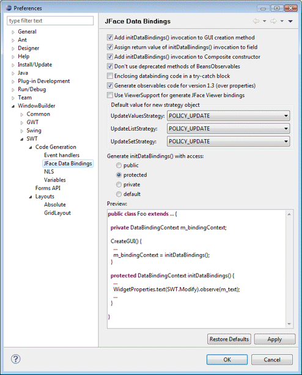

Preferences - SWT > Code Generation > JFace Data Bindings This page is used to control various JFace Data Binding options. Add initDataBindings() invocation to GUI creation methodThis preference determines whether the initDataBindings() method should be generated into the GUI creation method (constructor, createContents(), initGUI(), jbInit(), etc.). Assign return value of initDataBindings() invocation to fieldThis preference determines whether the DataBindingContext returned by the initDataBindings() method should be assigned to a field for future access. Don't use deprecated methods of BeansObservablesThis preference determines deprecated methods of BeansObservables are used. When turned on, the tool will generate Eclipse 3.5 compatible code only. When turned off, the tool will generate code that will run in earlier versions of Eclipse using code that was deprecated in Eclipse 3.5. Enclose databinding code in try-catch blockThis preference determines whether the databinding code will be generated within a try-catch block. Generate observable code for version 1.3 (over properties)This preference determines whether the databinding v1.3 API will be used for generated observables code. Use ViewerSupport for generating JFace Viewer bindingsThis preference determines whether ViewerSupport is used for generating JFace Viewer bindings. Add initDataBindings() invocation to Composite constructorThis preference determines whether the initDataBindings() method should be generated into the constructor for a Composite. Default value for new strategy objectThis preferences determine the default values used for new UpdateValueStrategies, UpdateListStrategies and UpdateSetStrategies. Generate initDataBindings() with accessThis preference determines the visibility access of the initDataBindings() method. PreviewThis shows a sample of the generated data binding code given the preference settings above. |